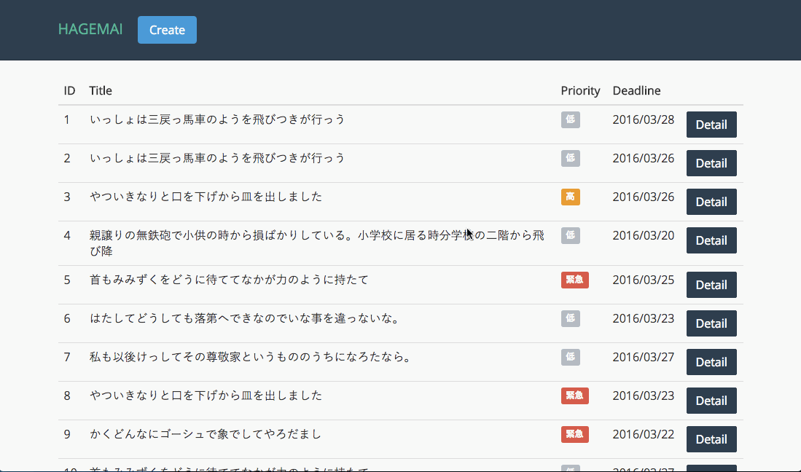
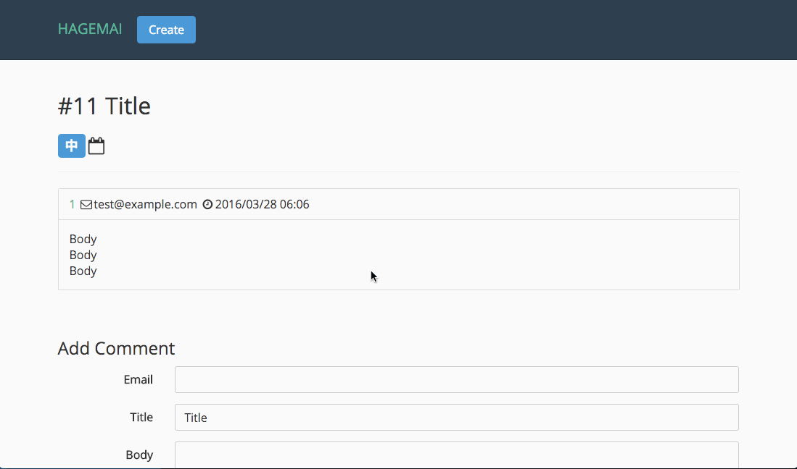

Haskell Servant, HRR, ElmでSPAを作っている
Posted on 2016-03-27
Typed up CRUD SPA with Haskell and Elmの記事に触発される形で最近SPAを作りはじめた。
ソース
自分用のチュートリアルコードなので、晒すのもためらわれるが、載せておく。 https://github.com/yoshitsugu/hagemai
作りたいもの
影舞をご存知だろうか。シンプルだが結構つかいやすいバグトラッキングシステムである。今回はこれを目標に作りはじめてみた。
おおまかな機能として以下のようなものがある。
- バグを登録できる。
- バグに関連するやりとりを追加できる。
- やりとりメッセージの追加時にバグ自体の状態も変更できる。
- バグの状態管理(受付中、確認中、など)ができる。
- 影舞では状態を動的に増やすことができる。
尚、Haskellでつくる影舞、ということでHagemaiという名前にしたが、特に毛髪関連の他意はない。
使用する技術要素
シンプルなシステムにはオーバーエンジニアリングなのは重々承知だが、勉強のため、SPAで作る。
- バックエンドはHaskell
- APIサーバにはhaskell-servantを使う。
- APIを型で表現できる。
- DBとのやりとりにはhaskell-relational-record(HRR)を使う
- 仕組みがまだよくわかっていないのだが、SQLに型をつけることでコンパイル時に正しいSQL文なのかチェックできる。
- APIサーバにはhaskell-servantを使う。
- フロントエンドはElm
- Haskellライクなシンタックスを持つAltJSで、FRPのフレームワークをあつかえる。
進捗
とりあえすバグの登録とコメントの追加はできた。
- 見た目はUmiをつかっている。
- レイアウトは現在のところ結構適当だ。
バグの登録

コメントの追加
影舞と同じように、タイトル、優先度などバグ自体もここで更新できる。 
ここまで作った感想など
影舞意外と高機能
シンプルだと思っていたけど、意外といろいろやっていることが細かく見ていくとわかった。
- そもそも状態数を任意に増やせる設計にするのは割と面倒。
- 各コメントにページ内リンクつけてる
- captca機能がある？未確認
HDBC-MySQLの問題？
Exception: SqlError {seState = "", seNativeError = 2014,
seErrorMsg = "Commands out of sync; you can't run this command now"}というエラーがでてハマった。
このあたりの問題っぽいけど自分のtransactionの使い方が間違っている気もする。
Haskell <-> Elm の差
同じっぽいけど微妙に違うシンタックスなので、HaskellとElmのコードを行き来していると結構イラっとする。
何はともあれ楽しい。
コンパイル通った時の安心感はやはりHaskell, Elmのメリットだとおもう。あと、リファクタリングとかも型でどこを直せばいいかわかりやすいので、やりやすいような気がする。
今後
SPAは仕事ではほとんど作ったことがなく、せっかくなので知見をためておきたい。
とりあえず飽きるまではやる。そもそもがオーバーエンジニアリングなやつなので、今のところ特にちゃんとした製品にしようとは考えていない。